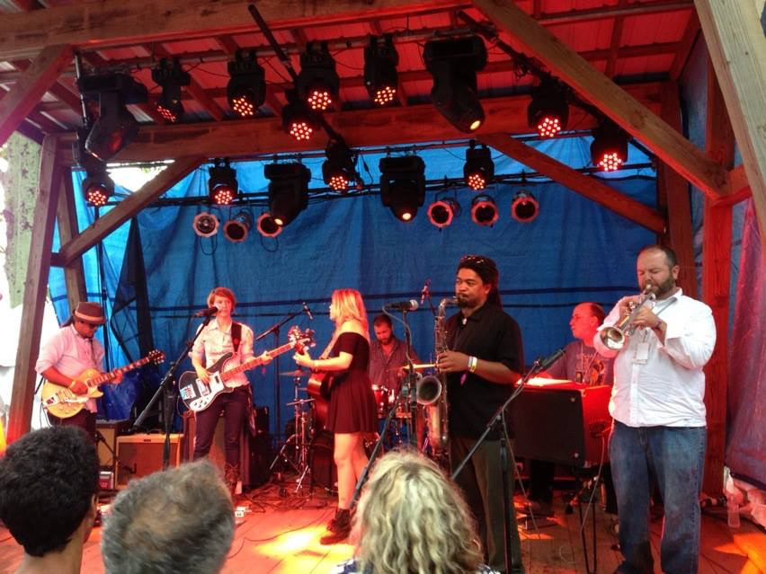

I'm Jonathan.
“When I hear music, I fear no danger. I am invulnerable. I see no foe. I am related to the earliest times, and to the latest.” ― Henry David Thoreau
Hello.
I am Dr. Jonathan Whitmire.
I spent the first half of my life teaching music in public schools and universities.
Now I develop web and app based music software.
My Skills.
Icons made by
photo3idea_studio
from
www.flaticon.com
Design and Development
Teaching during the pandemic was the impetus for me to learn to code.
I began learning to code with Python in 2021.
I am currently developing an app to easily transcribe guitar and bass music into tablature and musical notation.
Contact Vitae

Musical
I'm a life long musician.
My mom forced piano, voice, and eventually trumpet lessons on me as a kid.
I am still pretty terrible at piano, but I can keep up on trumpet and electric bass.
I'm so fortunat to have played trumpet with many fantastic performers, including:
Wanda Jackson
"Hard Headed Woman" live performance 1958
The Four Tops
"Baby I Need Your Loving" 1966
Patterson Hood
"Leaving Time" live performance - Double Decker Festival 2012
The Kudzu Kings
"Streetwalking Rototiller Dream Live" live performance - The Lyric 2015
The Lizzy Ross Band
"Use Me" live perforamnce - Floyd Fest 2013
The idea for my app came while strugling to transcribe parts by hand, with my bass in my lap.
Live Performances
Get In Touch
Contact Information
© 2021 Dr. Jonathan Whitimre.